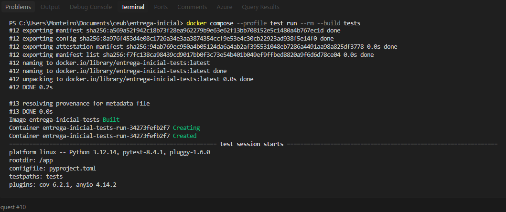
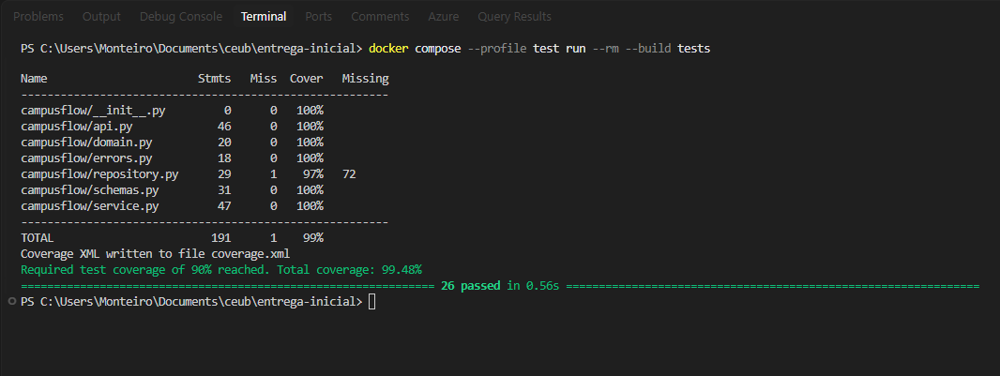
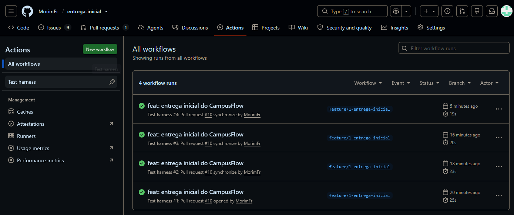
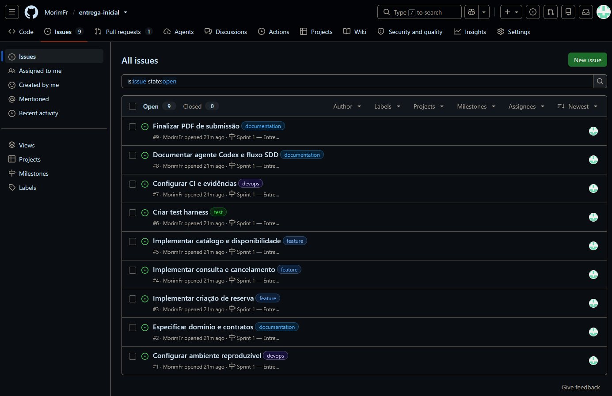
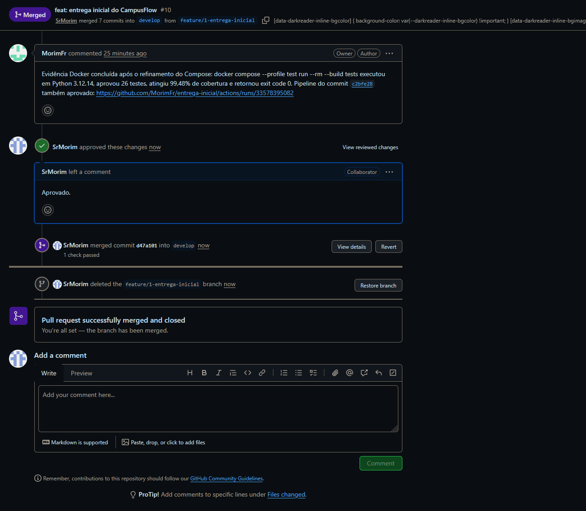
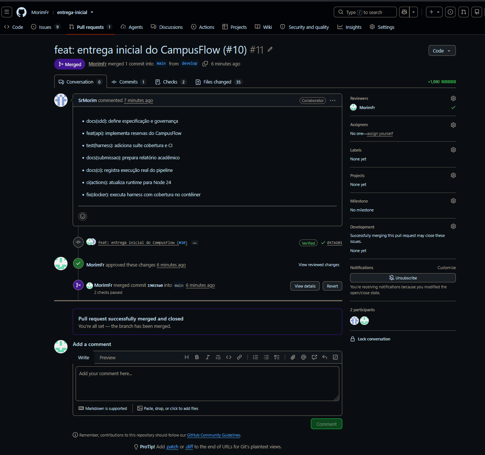
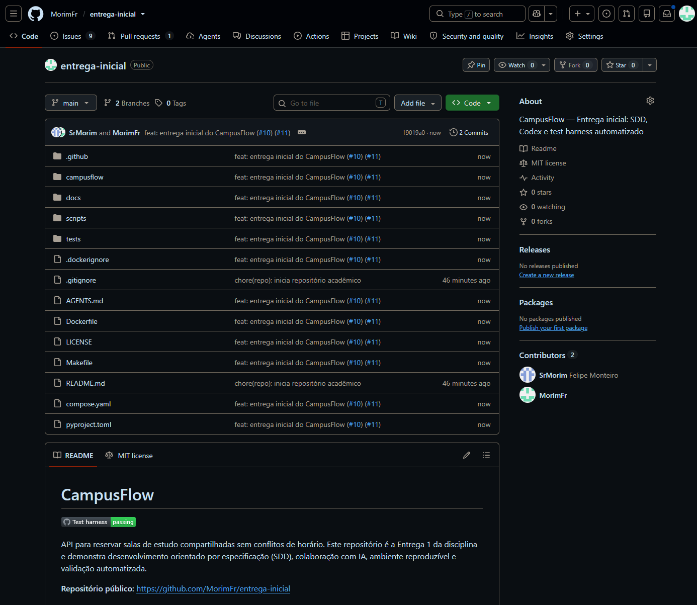
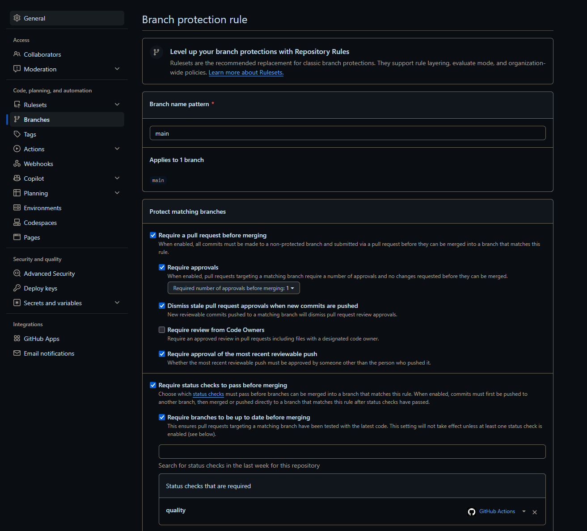
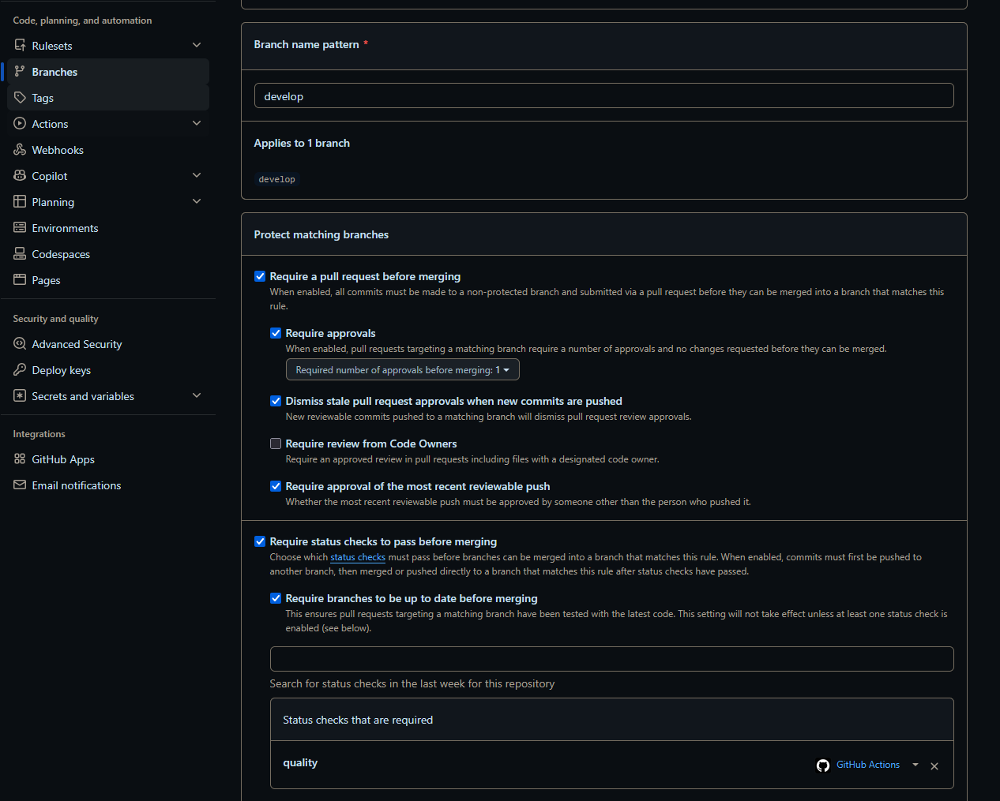

O CampusFlow é uma API para reserva de salas de estudo compartilhadas. O sistema elimina conflitos de horário, respeita a capacidade das salas, limita duração e quantidade diária de reservas e mantém um contrato HTTP verificável.
| Área | Tecnologia | Finalidade |
|---|---|---|
| Aplicação | Python 3.12, FastAPI, Pydantic | API, contratos e validação de entrada. |
| Qualidade | Pytest, pytest-cov, Ruff | Testes, cobertura e análise estática. |
| Ambiente | Docker e Docker Compose | Execução reproduzível. |
| Automação | GitHub Actions | Validação obrigatória em Pull Requests. |
| IA | Codex e AGENTS.md | Apoio à decomposição, código e testes no fluxo SDD. |
A especificação em docs/SPECIFICATION.md é a fonte de verdade do comportamento.
Ela contém requisitos RF-01 a RF-06, regras RN-01 a RN-09, requisitos não funcionais,
contratos JSON/HTTP e uma matriz de rastreabilidade para os testes.
A revisão dos casos de teste revelou ambiguidades sobre fuso horário, intervalos adjacentes,
cancelamento repetido e limite diário. As decisões foram incorporadas à versão 0.2.0 e
registradas em docs/SPEC_CHANGELOG.md. A execução Docker também revelou que o
atalho pytest não ativava o coletor de cobertura no contêiner; o Compose foi
refinado para python -m pytest e validado novamente.
| Componente | Responsabilidade |
|---|---|
api.py | Rotas, injeção e tradução de erros para HTTP. |
service.py | Casos de uso e regras de negócio. |
domain.py | Entidades e estados sem dependência do framework. |
repository.py | Porta de persistência e adaptador em memória. |
schemas.py | Contratos públicos de entrada e saída. |
As decisões estruturais estão documentadas nos ADRs 001 e 002. Essa separação permite testar as regras sem servidor ou banco e trocar a persistência em uma iteração futura.
.\scripts\setup.ps1 .\scripts\test.ps1 uvicorn campusflow.api:app --reload
docker compose up --build api docker compose --profile test run --rm --build tests
O Dockerfile usa Python 3.12 e instala versões fixadas no pyproject.toml. O Compose
possui serviços independentes para API e testes. A mesma suíte é executada localmente, no
contêiner e no GitHub Actions.
O Codex foi usado como agente auxiliar para decompor o enunciado, estruturar a aplicação e
apoiar os testes. O arquivo AGENTS.md mantém no repositório as instruções do fluxo
SDD, os limites arquiteturais, os comandos de validação e os requisitos de segurança. Essa
configuração segue o mecanismo de instruções persistentes documentado oficialmente pelo
Codex.
Prompts e controles de revisão estão registrados em docs/AI_USAGE.md. Saída de IA
não substitui especificação, teste, CI ou aprovação humana.
O harness possui testes unitários do serviço e testes de integração dos contratos HTTP. Cada teste usa um repositório isolado, não depende de rede, relógio real ou ordem de execução, e o pipeline falha se a cobertura ficar abaixo de 90%.
| Ambiente | Python | Testes | Cobertura | Estado |
|---|---|---|---|---|
| Local Windows | 3.14.7 | 26/26 | 99,39% | Aprovado |
| Docker Linux | 3.12.14 | 26/26 | 99,48% | Aprovado |
| GitHub Actions | 3.12.14 | 26/26 | 99,48% | Aprovado |
Required test coverage of 90% reached. Total coverage: 99.48% ============================== 26 passed in 0.52s ==============================



A execução final está disponível em
https://github.com/MorimFr/entrega-inicial/actions/runs/33578395082 e publicou log e
coverage.xml como artefatos.

As Issues decompõem ambiente, especificação, funcionalidades, harness, CI, agente de IA e submissão. Felipe Amorim Monteiro, único integrante do grupo, aparece como responsável. A revisão foi realizada por colaborador externo autorizado, preservando a separação entre autor e aprovador.





A Entrega 1 estabeleceu uma base funcional e auditável para evolução iterativa do CampusFlow. A especificação dirige o comportamento; a arquitetura separa contratos, regras e persistência; e o harness oferece feedback rápido nos três ambientes de execução.
| Item | Evidência | Estado |
|---|---|---|
| Repositório e governança | Issues, branches protegidas, PRs, revisões, README e ADRs. | Atendido |
| Especificação SDD | Requisitos, regras, contratos, componentes, rastreabilidade e changelog. | Atendido |
| Agente e ambiente | Codex, AGENTS.md, Dockerfile, Compose e scripts. | Atendido |
| Test harness | 26 testes, bordas, 99,48%, logs, Docker e Actions. | Atendido |
Felipe Amorim Monteiro — RA 22452139.